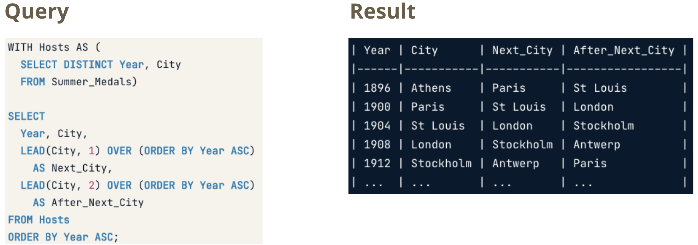
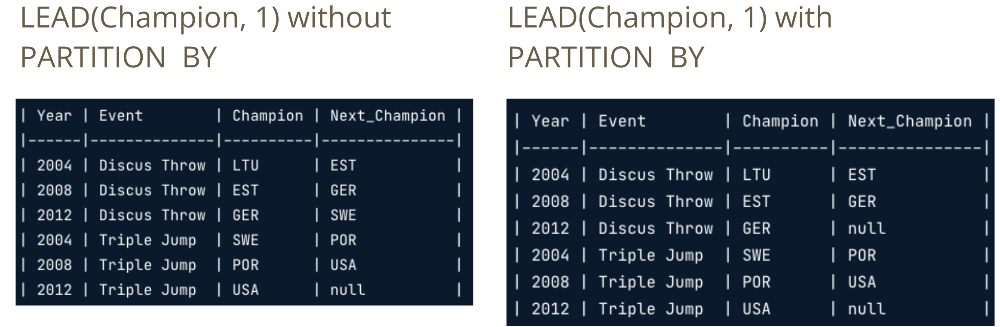
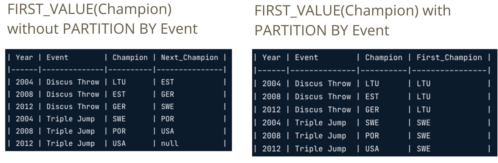
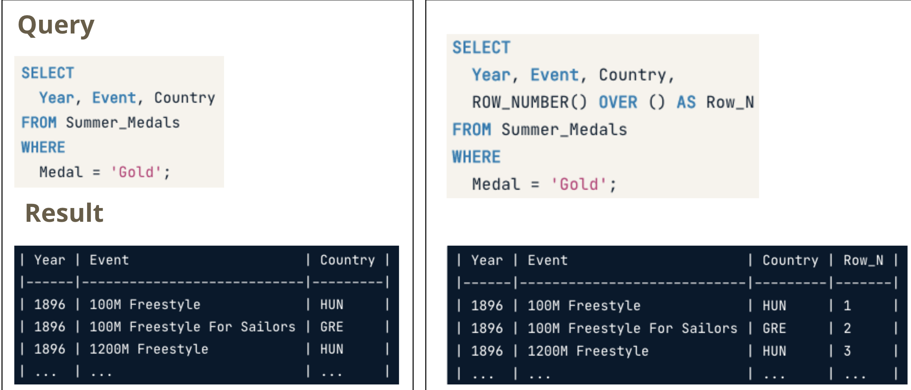
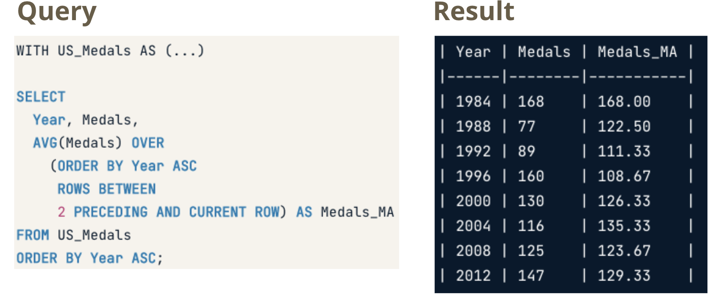

Chapter 2 SQL questions
Note the solutions provided here are based off of PostgreSQL syntax of SQL.
2.1 SQL tips
Some keywords are especially useful for SQL interview problems. Here are some that I suggest to know how to use well:
INNER JOIN,LEFT JOIN,FULL JOIN- just know them!COALESCE
- textbook definition - function returns the first non-NULL expression in the specified list. If all the arguments are NULL then it will return NULL as its output.
- use to replace certain values to a default value (but in interviews mostly use for NULL or outliers).
CASE WHEN- expression is the same as IF/ELSE statement in other programming languages.
- e.g.
SELECT title,
rating,
CASE rating
WHEN 'G' THEN 'General Audiences'
WHEN 'PG' THEN 'Parental Guidance Suggested'
WHEN 'PG-13' THEN 'Parents Strongly Cautioned'
WHEN 'R' THEN 'Restricted'
WHEN 'NC-17' THEN 'Adults Only'
END rating_description
FROM film
ORDER BY title;SUM CASE WHEN- can use to aggregate a count of a certain row category.
- e.g.
SELECT
SUM(CASE rating
WHEN 'G' THEN 1
ELSE 0
END) "General Audiences"
FROM filmROUND- when using floats or making percentages just use it for more readable output.Common Table Expressions (CTEs), and subqueries - know how to use them, you’ll need them!
HAVINGvsWHERE- The difference between the having and where clause in SQL is that the where clause cannot be used with aggregates, but the having clause can. The where clause works on row’s data, not on aggregated data.Casting data types with
CASTor::Misc window functions - which perform an operation across a set of rows that are somehow related to the current row.
Fetching - Relative
LAG(column, n)returns column’s value at the row n rows before the current rowLEAD(column, n)returns column’s value at the row n rows after the current row

 Fetching - Absolute
FIRST_VALUE(column)returns the first value in the table or partitionLAST_VALUE(column)returns the last value in the table or partition
Figure 2.1: RANGE BETWEEN clause extends the window to the end of the table or partition.

ROW_NUMBER()always assigns unique numbers, even if two rows’ values are the same RANK()assigns the same number to rows with identical values, skipping over the next numbers in such casesDENSE_RANK()also assigns the same number to rows with identical values, but doesn’t skip over the next numbersFrames
- ROWS BETWEEN [START] AND [FINISH]
- n PRECEDING: n rows before the current row
- CURRENT ROW: the current row
- n FOLLOWING: n rows after the current row

Also, use tools to make mock datasets to CHECK your work. Try to first solve as an interview would, with no interactivity. Pay attention to things missed between when you solved it and checked your work.
- Convert excel table to help generate SQL insert statements
- SQL sandboxes:db-fiddle.com, and sqlfiddle.com
2.2 Sample Questions
2.2.1 Calculate the 30 day readmission rate
Table: encounter
Columns: patient_id, encounter_id, encounter_start, encounter_end, encounter_class (in patient)
CREATE TABLE encounter
(patient_id int, admid int, adm_date date, dis_date date, encounter_class int)
;
INSERT INTO encounter
(patient_id, admid, adm_date, dis_date, encounter_class)
VALUES
(0001, 10000, '2017-01-01 04:05:06', '2017-01-05 04:05:06', 5),
(0002, 10001, '2017-02-01 04:05:06', '2017-02-02 04:05:06', 3),
(0003, 10002, '2017-03-01 04:05:06', '2017-03-04 04:05:06', 2),
(0004, 10003, '2017-04-01 04:05:06', '2017-04-15 04:05:06', 4),
(0001, 10004, '2017-05-01 04:05:06', '2017-05-02 04:05:06', 2),
(0005, 10005, '2017-06-01 04:05:06', '2017-06-05 04:05:06', 1),
(0001, 10006, '2017-04-01 04:05:06', '2017-04-03 04:05:06', 1),
(0002, 10007, '2017-03-01 04:05:06', '2017-03-15 04:05:06', 7),
(0006, 10008, '2017-02-01 04:05:06', '2017-02-05 04:05:06', 2),
(0003, 10009, '2017-07-01 04:05:06', '2017-07-03 04:05:06', 1),
(0007, 10010, '2017-09-01 04:05:06', '2017-09-20 04:05:06', 2)
;
/* make indicator for patient id, if readmitted within 30 days
merge cte for total count of unique admissions*/
WITH next_date_tbl AS (
SELECT
patient_id,
adm_date,
LEAD(adm_date, 1) OVER (
PARTITION BY patient_id
ORDER BY adm_date
) AS next_date
FROM encounter
), date_dif_tbl AS (
SELECT
patient_id,
(CAST(next_date AS DATE) - CAST(adm_date AS DATE)) AS date_dif
FROM next_date_tbl
), num_denom AS (
SELECT
SUM(CASE WHEN
date_dif <= 30 THEN 1
ELSE 0 END) AS readmitted,
COUNT(*) AS total_cnt
FROM date_dif_tbl
)
SELECT (ROUND((readmitted::float/total_cnt::float)::numeric,2) * 100) AS thirty_day_readmission_rt
FROM num_denom2.2.2 Top 10 diagnoses from encounters with a length of service greater then 3 days
- SQL
- Database Querying
- Health records
Table: encounter
Columns: encounter_id, diagnosis_id, priority, encounter_start, encounter_end
CREATE TABLE encounters
(encounter_id int PRIMARY KEY, diagnosis_id int, encounter_start TIMESTAMP, encounter_end TIMESTAMP);
INSERT INTO encounters
(encounter_id, diagnosis_id, encounter_start, encounter_end)
VALUES
(1, 5, '2022-01-08 04:05:06', '2022-01-20 04:05:06'),
(2, 5, '2022-01-08 04:05:06', '2022-01-20 04:05:06'),
(3, 5, '2022-01-08 04:05:06', '2022-01-20 04:05:06'),
(4, 2, '2022-01-08 04:05:06', '2022-01-20 04:05:06'),
(5, 2, '2022-01-08 04:05:06', '2022-01-20 04:05:06'),
(6, 3, '2022-01-08 04:05:06', '2022-01-09 04:05:06'),
(7, 4, '2022-01-08 04:05:06', '2022-01-09 04:05:06'),
(8, 4, '2022-01-08 04:05:06', '2022-01-09 04:05:06'),
(9, 1, '2022-01-08 04:05:06', '2022-01-20 04:05:06')
;
WITH date_calc AS (
SELECT
*,
(CAST(encounter_end AS date) - CAST(encounter_start AS date)) AS los
FROM encounters
), grouped_diagnosis AS (
SELECT
diagnosis_id,
COUNT(*) AS n
FROM date_calc
WHERE los > 3
GROUP BY
diagnosis_id
)
SELECT
diagnosis_id
FROM grouped_diagnosis
ORDER BY n DESC
LIMIT 10;2.2.3 Employee survey results
Suppose you’re consulting for a company, and you’ve sent out a survey that asks successive qustions randomly. The survey logs data into a table called survey_logging. The schema of the table is:
| Column Name | Data Type | Description |
|---|---|---|
| employee_id | integer | employee id of the survey respondant |
| action | string | Will be one of the following values, ‘view’, ‘answer’, ‘skip’ |
| question_id | integer | ID of the question asked |
| answer_id | integer | ID of the answer asked |
| timestamp | integer | time stamp of the action made by respondant |
Using SQL, find which question has the highest response rate.
/*Intermediate result would look like:
| question_id | response_rate | */
CREATE TABLE survey_logging
(user_id int PRIMARY KEY, "action" varchar(10), question_id int)
;
INSERT INTO survey_logging
(user_id, "action", question_id)
VALUES
(1, 'answer', 1),
(2, 'answer', 1),
(3,'answer', 2),
(4,'skip', 2),
(5,'skip', 1),
(6,'answer', 1),
(7,'answer', 1),
(8,'answer', 1),
(9,'skip', 1),
(10,'skip', 2)
;
/*~~~~~~~~~~~~~~~~~~~~~*/
WITH response_by_q AS (
SELECT
question_id,
SUM (CASE
WHEN action = 'answer' THEN 1
ELSE 0
END) AS answered,
COUNT(*) AS ovr_count
FROM survey_logging
GROUP BY question_id
),
extra_column AS (
SELECT
question_id,
ROUND(answered * 100.0 / ovr_count, 1) AS answer
FROM response_by_q
)
SELECT question_id
FROM extra_column
WHERE answer = (SELECT MAX(answer) FROM extra_column)2.2.4 Calculating student attendance
Given the following table schemas, how would you figure out the overall attendance rate for each grade on 2022-01-08? Solution will be written in SQL for premium users.
Table 1: student_attendance_log
| Column Name | Data Type | Description |
|---|---|---|
| date | string | date of log per student_id, format is timestamp |
| student_id | integer | id of the student |
| attendance_status | string | Possible values are [‘present’, ‘tardy’, ‘absent’] |
Table 2: student_demographic
| Column Name | Data Type | Description |
|---|---|---|
| student_id | integer | id of the student |
| grade_level | integer | will be a value between 0-12, which corresponds |
| date_of_birth | string | Student birth date, format is ‘yyyy-mm-dd’ |
CREATE TABLE student_attendence_log
(student_id int PRIMARY KEY, "date" varchar, attendence_status varchar);
INSERT INTO student_attendence_log
(student_id, "date", attendence_status)
VALUES
(1, '2022-01-08 04:05:06', 'present'),
(2, '2022-01-08 04:05:06', 'present'),
(3, '2022-01-08 04:05:06', 'tardy'),
(4, '2022-01-08 04:05:06', 'present'),
(5, '2022-01-08 04:05:06', 'absent'),
(6, '2022-01-08 04:05:06', 'present'),
(7, '2022-01-08 04:05:06', 'tardy'),
(8, '2022-01-08 04:05:06', 'present'),
(9, '2022-01-08 04:05:06', 'tardy')
;
CREATE TABLE student_demographic
(student_id int PRIMARY KEY, grade_level varchar);
INSERT INTO student_demographic
(student_id, grade_level)
VALUES
(1, '11'),
(2, '12'),
(3, '12'),
(4, '10'),
(5, '11'),
(6, '11'),
(7, '12'),
(8, '10'),
(9, '10')
;
-- table 1 date and attendence 'present' and total
-- aggregate on grade table 2
WITH merged AS (
SELECT "date"::date, a.student_id, a.attendence_status, b.grade_level
FROM student_demographic b
LEFT JOIN student_attendence_log a
ON a.student_id = b.student_id
WHERE "date"::date = to_date('2022-01-08','YYYY-MM-DD')
),
present_vs_total AS (
SELECT
SUM(CASE
WHEN attendence_status = 'present'
THEN 1
ELSE 0
END) AS present,
COUNT(*) AS total,
grade_level
FROM merged
GROUP BY grade_level
)
SELECT
grade_level,
ROUND((present::float / total::float)::numeric,2) AS attendence_rate
FROM present_vs_total2.2.5 Music streaming behavior
Below are two table schemas for a popular music streaming application:
Table 1: user_song_log
| Column Name | Data Type | Description |
|---|---|---|
| user_id | id | id of the streaming user |
| timestamp | integer | timestamp of when the user started listening to the song, epoch seconds |
| song_id | integer | id of the song |
| artist_id | integer | id of the artist |
Table 2: song_info
| Column Name | Data Type | Description |
|---|---|---|
| song_id | integer | id of the song |
| artist_id | integer | id of the artist |
| song_length | integer | length of song in seconds |
Question: Given the above, can you write a SQL query to estimate the average number of hours a user spends listening to music daily? You can assume that once a given user starts a song, they listen to it in its entirety.
CREATE TABLE user_song_log
(user_id int, "timestamp" bigint, song_id int);
INSERT INTO user_song_log
(user_id, "timestamp", song_id)
VALUES
(1, 1655081554, 1),
(2, 1615080554, 1),
(3, 1635071554, 2),
(4, 1655081544, 3),
(2, 1655081584, 2),
(1, 1635081554, 4),
(3, 1655081532, 3),
(3, 1625081524, 3),
(2, 1645081551, 2)
;
CREATE TABLE song_info
(song_id int, song_length int);
INSERT INTO song_info
(song_id, song_length)
VALUES
(1, 120),
(2, 200),
(3, 134),
(4, 233)
;
-- hours is 60 * 60 from seconds
WITH song_length_by_day AS (
SELECT SUM(song_length) AS song_length_by_day
FROM (
SELECT a.user_id, to_timestamp(a."timestamp")::date AS day, a.song_id, b.song_length
FROM user_song_log a
INNER JOIN song_info b
ON a.song_id = b.song_id) joined
GROUP BY user, day
)
SELECT
AVG((song_length_by_day::float / 60)/60) AS "Average hours spent listening to music daily"
FROM song_length_by_day2.2.6 A hotel chain’s loyal customers
Suppose you’re an analyst for a major US hotel chain which has locations all over the US. Your marketing team is planning a promotion focused around loyal customers, and they are trying to forecast how much revenue the promotion will bring in. However, they need help from you to understand how much revenue comes from “loyal” customers to plug into their model.
A “loyal” customer is defined as (1) having a membership with your company’s point system, (2) having >=2 stays at each hotel the customer visited, (3) having stayed at 3 different locations throughout the US.
You have a table showing all transactions made in 2017. The schema of the table is below:
| Column Name | Data Type | Description |
|---|---|---|
| customer_id | id | id of the customer |
| hotel_id | integer | unique id for hotel |
| transaction_id | integer | id of the given transaction |
| first_night | string | first night of the stay, column format is “YYYY-mm-dd” |
| number_of_nights | integer | # of nights the customer stayed in hotel |
| total_spend | integer | total spend for transaction, in USD |
| is_member | boolean | indicates if the customer is a member of our points system |
Given this, can you write a SQL query that calculates percent of revenue loyal customers brought in 2017?
CREATE TABLE customer_transactions
(
customer_id int,
hotel_id varchar(300),
transaction_id varchar(300),
first_night varchar(300),
number_of_nights varchar(300),
total_spend int,
is_member boolean
);
INSERT INTO customer_transactions (customer_id,hotel_id,transaction_id,first_night,number_of_nights,total_spend,is_member) VALUES (1, '2', '1', '2020-01-01', '1', 1000, TRUE);
INSERT INTO customer_transactions (customer_id,hotel_id,transaction_id,first_night,number_of_nights,total_spend,is_member) VALUES (1, '2', '2', '2020-01-02', '1', 1000, TRUE);
INSERT INTO customer_transactions (customer_id,hotel_id,transaction_id,first_night,number_of_nights,total_spend,is_member) VALUES (2, '4', '3', '2020-01-03', '1', 1000, FALSE);
INSERT INTO customer_transactions (customer_id,hotel_id,transaction_id,first_night,number_of_nights,total_spend,is_member) VALUES (3, '4', '4', '2020-01-04', '1', 1000, FALSE);
INSERT INTO customer_transactions (customer_id,hotel_id,transaction_id,first_night,number_of_nights,total_spend,is_member) VALUES (2, '5', '5', '2020-01-05', '1', 1000, FALSE);
INSERT INTO customer_transactions (customer_id,hotel_id,transaction_id,first_night,number_of_nights,total_spend,is_member) VALUES (2, '6', '6', '2020-01-06', '1', 1000, FALSE);
INSERT INTO customer_transactions (customer_id,hotel_id,transaction_id,first_night,number_of_nights,total_spend,is_member) VALUES (3, '7', '7', '2020-01-07', '1', 1000, FALSE);
INSERT INTO customer_transactions (customer_id,hotel_id,transaction_id,first_night,number_of_nights,total_spend,is_member) VALUES (3, '7', '8', '2020-01-08', '1', 1000, FALSE);
INSERT INTO customer_transactions (customer_id,hotel_id,transaction_id,first_night,number_of_nights,total_spend,is_member) VALUES (4, '2', '9', '2020-01-09', '1', 1000, FALSE);
INSERT INTO customer_transactions (customer_id,hotel_id,transaction_id,first_night,number_of_nights,total_spend,is_member) VALUES (4, '4', '10', '2020-01-10', '1', 1000, FALSE);
INSERT INTO customer_transactions (customer_id,hotel_id,transaction_id,first_night,number_of_nights,total_spend,is_member) VALUES (8, '4', '11', '2020-01-11', '1', 1000, TRUE);
INSERT INTO customer_transactions (customer_id,hotel_id,transaction_id,first_night,number_of_nights,total_spend,is_member) VALUES (8, '2', '12', '2020-01-12', '1', 1000, TRUE);
INSERT INTO customer_transactions (customer_id,hotel_id,transaction_id,first_night,number_of_nights,total_spend,is_member) VALUES (8, '7', '13', '2020-01-13', '1', 1000, TRUE);
INSERT INTO customer_transactions (customer_id,hotel_id,transaction_id,first_night,number_of_nights,total_spend,is_member) VALUES (8, '7', '14', '2020-01-14', '1', 1000, TRUE);
INSERT INTO customer_transactions (customer_id,hotel_id,transaction_id,first_night,number_of_nights,total_spend,is_member) VALUES (8, '4', '15', '2020-01-15', '1', 1000, TRUE);
INSERT INTO customer_transactions (customer_id,hotel_id,transaction_id,first_night,number_of_nights,total_spend,is_member) VALUES (8, '6', '16', '2020-01-16', '1', 1000, TRUE);
INSERT INTO customer_transactions (customer_id,hotel_id,transaction_id,first_night,number_of_nights,total_spend,is_member) VALUES (1, '7', '17', '2020-01-17', '1', 1000, TRUE);
INSERT INTO customer_transactions (customer_id,hotel_id,transaction_id,first_night,number_of_nights,total_spend,is_member) VALUES (1, '7', '18', '2020-01-18', '1', 1000, TRUE);
INSERT INTO customer_transactions (customer_id,hotel_id,transaction_id,first_night,number_of_nights,total_spend,is_member) VALUES (8, '6', '19', '2020-01-19', '1', 1000, TRUE);
INSERT INTO customer_transactions (customer_id,hotel_id,transaction_id,first_night,number_of_nights,total_spend,is_member) VALUES (7, '4', '20', '2020-01-20', '1', 1000, FALSE);
INSERT INTO customer_transactions (customer_id,hotel_id,transaction_id,first_night,number_of_nights,total_spend,is_member) VALUES (7, '4', '21', '2020-01-21', '1', 1000, FALSE);
INSERT INTO customer_transactions (customer_id,hotel_id,transaction_id,first_night,number_of_nights,total_spend,is_member) VALUES (6, '2', '22', '2020-01-22', '1', 1000, FALSE);
INSERT INTO customer_transactions (customer_id,hotel_id,transaction_id,first_night,number_of_nights,total_spend,is_member) VALUES (6, '7', '23', '2020-01-23', '1', 1000, FALSE);
INSERT INTO customer_transactions (customer_id,hotel_id,transaction_id,first_night,number_of_nights,total_spend,is_member) VALUES (5, '7', '24', '2020-01-24', '1', 1000, FALSE);
INSERT INTO customer_transactions (customer_id,hotel_id,transaction_id,first_night,number_of_nights,total_spend,is_member) VALUES (5, '4', '25', '2020-01-25', '1', 1000, FALSE);
--~~~~~~~~~~~~~~~~~~~~~~~~~~~~
WITH plus_two_hotel AS (
SELECT customer_id, hotel_id, COUNT(*) AS two_plus_at_hotel, 1 AS plus_two_hotel
FROM customer_transactions
GROUP BY customer_id, hotel_id
HAVING COUNT(*) >= 2
), three_locations AS (
SELECT customer_id, COUNT(DISTINCT(hotel_id)) AS three_hotels, 1 AS three_locations
FROM customer_transactions
GROUP BY customer_id
HAVING COUNT(*) > 3
), joined AS (
SELECT
a.customer_id,
total_spend,
is_member,
COALESCE(plus_two_hotel, 0) AS plus_two_hotel,
COALESCE(three_locations, 0) AS three_locations
FROM customer_transactions a
LEFT JOIN plus_two_hotel AS b
ON a.customer_id = b.customer_id
LEFT JOIN three_locations AS c
ON a.customer_id = c.customer_id
)
SELECT
ROUND(((SELECT SUM(total_spend) AS member_spent FROM joined WHERE plus_two_hotel = 1 AND three_locations = 1 AND is_member = TRUE)::float /
(SELECT SUM(total_spend) AS all_users_spent FROM joined)::float)::numeric * 100, 2) AS percent_revenue_of_loyal_customers_in_2007
--67.442.2.7 User churn on Instagram
How would you measure user churn on Instagram? source
Assume that a user is considered churned if they haven’t displayed any active behavior (read, comment, like, post) the past 7 days. How many users have churned as of today? Use the table below to address this question:
| timestamp | user_id | activity |
|---|---|---|
| 1 | ‘2022-01-08 04:05:06’ | ‘read’ |
| 2 | ‘2022-01-01 04:05:06’ | ‘comment’ |
| 3 | ‘2022-01-05 04:05:06’ | ‘like’ |
| 3 | ‘2022-01-05 04:05:06’ | ‘post’ |
| 1 | ‘2022-01-06 04:05:06’ | ‘read’ |
| 4 | ‘2022-01-02 04:05:06’ | ‘read’ |
| 3 | ‘2022-01-03 04:05:06’ | ‘comment’ |
| 2 | ‘2022-01-04 04:05:06’ | ‘sign-in’ |
| 1 | ‘2022-03-05 04:05:06’ | ‘post’ |
CREATE TABLE usage
(user_id int, time_stamp TIMESTAMP, activity_type varchar);
INSERT INTO usage
(user_id, time_stamp, activity_type)
VALUES
(1, '2022-01-08 04:05:06', 'read'),
(2, '2022-01-01 04:05:06', 'comment'),
(3, '2022-01-05 04:05:06', 'like'),
(3, '2022-01-05 04:05:06', 'post'),
(1, '2022-01-06 04:05:06', 'read'),
(4, '2022-01-02 04:05:06', 'read'),
(3, '2022-01-03 04:05:06', 'comment'),
(2, '2022-01-04 04:05:06', 'sign-in'),
(1, '2022-03-05 04:05:06', 'post')
;
---------
-- out of order - need a window function with ORDER BY;
WITH prev_time_tbl AS (
SELECT
*,
LEAD(time_stamp) OVER(PARTITION BY user_id ORDER BY time_stamp DESC) AS prev_time
FROM usage
), churn_or_not_tbl AS (
SELECT
user_id,
CASE WHEN
(time_stamp::date - prev_time::date >= 7)
THEN 1
ELSE 0 END churn_or_not
FROM prev_time_tbl
ORDER BY user_id, churn_or_not DESC
)
SELECT
SUM(churn_or_not) AS "# churned in 7 days ever"
FROM churn_or_not_tbl;2.2.8 Group users by year-month and count visits
From the following table, generate a summary table with the visits by each user for each year-month for the first 4 months of 2019 (2019-01-01 - 2019-04-30).
| user_id | tstamp |
|---|---|
| 1 | 2019-01-03 20:00 |
| 1 | 2019-01-05 20:00 |
| 2 | 2019-01-07 20:00 |
| 2 | 2019-03-07 20:00 |
CREATE TABLE transaction
(user_id int, tstamp timestamp);
INSERT INTO transaction
VALUES
(1,'2019-01-03 20:00'),
(1,'2019-01-05 20:00'),
(1,'2019-01-07 20:00'), -- multiple visits this month
(1,'2019-02-03 20:00'), -- next month
(1,'2019-03-05 20:00'), -- next month
(2,'2019-01-07 20:00'),
(2,'2019-03-07 20:00'), -- not next month
(3,'2019-01-07 20:00'), -- just once
(4,'2019-02-07 20:00'); -- just once
-----------
WITH agged_by_month AS (
SELECT patient_id,
date_trunc('month', tstamp) AS month,
count(*) AS item_transactions
FROM transaction
WHERE tstamp >= '2019-01-01'::date
AND tstamp < '2019-05-01'::date -- time range of interest.
GROUP BY patient_id, 2
)
SELECT distinct(patient_id) AS user,
to_char(month, 'YYYY-MM') AS month,
sum(item_transactions) AS num_visits
FROM agged_by_month
GROUP BY 1, 2
ORDER BY 12.2.9 Weekly retention report with log data
A new feature in XYZ’s core web app has rolled out to 10% of all users. Are users coming back to the feature after trying it for the first time? Generate a weekly rention report using the feature usage log.
- The first row of the output sample below reads: 1000 users tried the schedule feature in the week of 2019-4-20 - 2019-4-27 for the first time, and 10% of them used it again 20 weeks later
- n week retention = % of distinct users that came back between 7n days and 7(n-1) days after their first visit
- Users don’t have to consistently come back every single week between Week 0 and Week n, where week 0 is when they first experienced the feature, to be considered retention for Week n
| created_at | user_id |
|---|---|
| 2019-03-23 | 425 |
| 2019-03-23 | 426 |
| 2019-03-24 | 425 |
| 2019-03-25 | 427 |
Expected output:
| cohort | retention_week | n_users | retention_r |
|---|---|---|---|
| 2019-04-21 | 20 | 1000 | 10% |
| 2019-04-21 | 21 | 1000 | 8% |
| 2019-04-28 | 1 | 800 | 40% |
(sql_fiddle)[https://dbfiddle.uk/?rdbms=postgres_13&fiddle=c13fa219d1324bdd58a6373201accbe6]
CREATE TABLE log_data
(created_at timestamp, user_id int)
;
INSERT INTO log_data
(created_at, user_id)
VALUES
('2019-04-04 12:00:00', 425),
('2019-03-27 12:00:00', 426),
('2019-03-25 12:00:00', 425),
('2019-04-02 12:00:00', 427),
('2019-04-02 12:00:00', 425),
('2019-03-19 12:00:00', 425),
('2019-04-11 12:00:00', 429),
('2019-04-06 12:00:00', 423),
('2019-04-09 12:00:00', 421),
('2019-03-20 12:00:00', 426),
('2019-04-13 12:00:00', 423),
('2019-04-11 12:00:00', 421)
;
-- ~~~~~~~~~~~~~~;
-- STEPS:;
-- 1. get cohort date and the start of the week, and the start of the week for the previous week for each observation in many dataset;
-- 2. count the retained by seeing if the date of log is within 7 days of the last - level is cohort and the start of the first week of the action;
-- 3. Get total counts for cohort to join
-- 4. add the retention week (pretty much done in step 2 with start of the week), joining total number of users in cohort and calculating retention
WITH first_cohort AS (
SELECT
*,
date_trunc('week', FIRST_VALUE(created_at) OVER (PARTITION BY user_id ORDER BY created_at ASC))::DATE AS cohort,
date_trunc('week', created_at)::DATE AS dt_start_wk,
COALESCE(LAG(created_at) OVER (PARTITION BY user_id ORDER BY created_at ASC), date_trunc('week', FIRST_VALUE(created_at) OVER (PARTITION BY user_id ORDER BY created_at ASC))::DATE) AS prev_dt
FROM log_data
), distinct_users_week AS (
SELECT
cohort,
dt_start_wk,
SUM(CASE WHEN
(created_at::DATE - prev_dt::DATE) < 7 THEN 1
ELSE 0 END) AS retained
FROM first_cohort
GROUP BY cohort, dt_start_wk
ORDER BY cohort ASC, dt_start_wk ASC
), cohort_count AS (
SELECT
cohort,
COUNT(*) AS n_users
FROM first_cohort
GROUP BY cohort
)
SELECT
duw.cohort,
ROW_NUMBER() OVER (PARTITION BY duw.cohort ORDER BY duw.cohort, duw.dt_start_wk) AS retention_week,
cc.n_users,
CONCAT(ROUND(duw.retained * 100.0 / cc.n_users,0), '%') AS retention_r
FROM distinct_users_week duw
INNER JOIN cohort_count cc ON duw.cohort = cc.cohort;